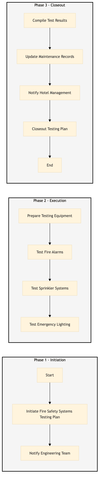

| Role | Steps |
|---|---|
| Facilities Manager | 1.1 1.2 3.1 3.2 3.3 3.4 |
| Fire Safety Engineer | 2.1 2.2 2.3 2.4 3.1 |
| Step | Name | Role | System | Input | Output | KPI | Dec? | Exc? | Pain Point / Risk |
|---|---|---|---|---|---|---|---|---|---|
| 1.1 | Initiate Fire Safety Systems Testing Plan | Facilities Manager | Oracle OPERA Cloud | Maintenance checklist | Testing plan document | Less than 30 min | N | Y | Inaccurate or outdated maintenance records |
| 1.2 | Notify Engineering Team | Facilities Manager | Oracle OPERA Cloud | Testing plan document | Notification to engineering team | Less than 5 min | N | Y | Delayed communication |
| 2.1 | Prepare Testing Equipment | Fire Safety Engineer | Oracle OPERA Cloud | Testing plan document | Prepared testing equipment list | Less than 10 min | N | Y | Missing or malfunctioning test equipment |
| 2.2 | Test Fire Alarms | Fire Safety Engineer | Oracle OPERA Cloud | Prepared testing equipment list | Fire alarm test report | Less than 15 min per area | Y | Y | False alarms or non-functional fire alarms |
| 2.3 | Test Sprinkler Systems | Fire Safety Engineer | Oracle OPERA Cloud | Prepared testing equipment list | Sprinkler system test report | Less than 20 min per area | Y | Y | Water leakage or non-functional sprinklers |
| 2.4 | Test Emergency Lighting | Fire Safety Engineer | Oracle OPERA Cloud | Prepared testing equipment list | Emergency lighting test report | Less than 10 min per area | Y | Y | Flickering or non-functional emergency lights |
| 3.1 | Compile Test Results | Fire Safety Engineer | Oracle OPERA Cloud | Fire alarm test report, sprinkler system test report, emergency lighting test report | Compiled test results document | Less than 30 min | N | Y | Inaccurate or incomplete test data |
| 3.2 | Update Maintenance Records | Facilities Manager | Oracle OPERA Cloud | Compiled test results document | Updated maintenance records | Less than 15 min | N | Y | Outdated or incomplete maintenance records |
| 3.3 | Notify Hotel Management | Facilities Manager | Oracle OPERA Cloud | Updated maintenance records | Notification to hotel management | Less than 5 min | N | Y | Delayed communication |
| 3.4 | Closeout Testing Plan | Facilities Manager | Oracle OPERA Cloud | Notification to hotel management | Closed testing plan document | Less than 5 min | N | Y | Incomplete or inaccurate documentation |
Fire Safety Systems Testing is a critical process to ensure that all fire safety systems are functioning correctly at a Marriott full-service hotel. This includes testing of fire alarms, sprinklers, and emergency lighting.